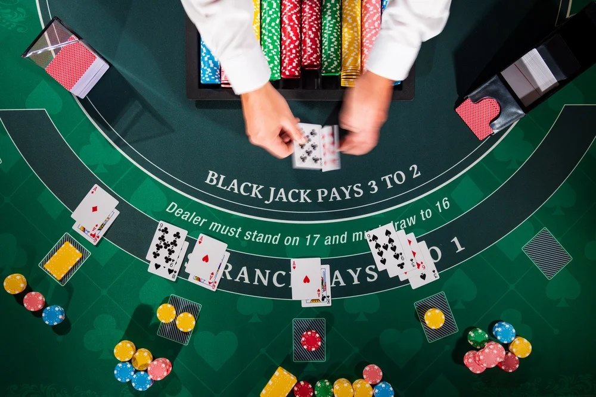
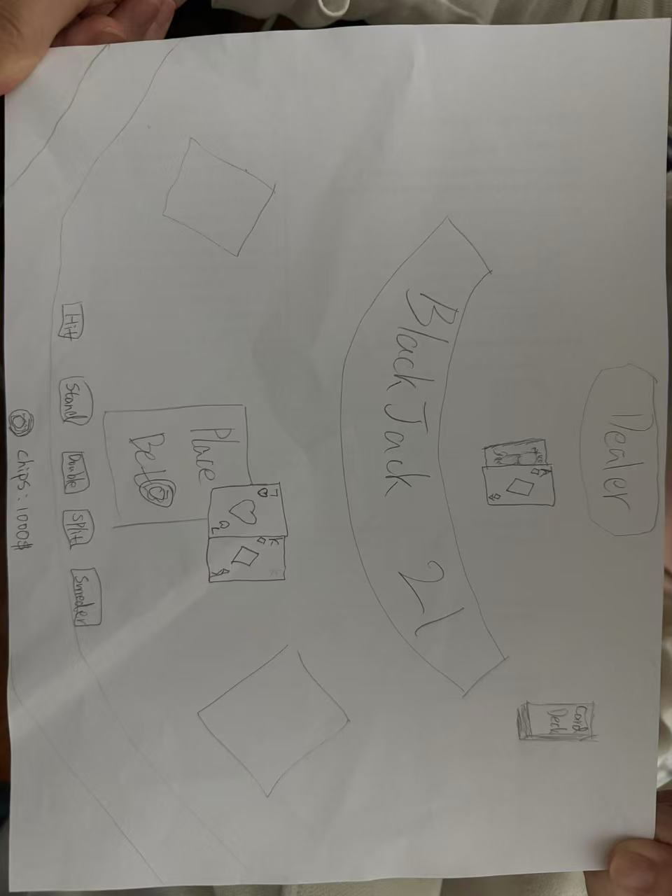

A classic, browser-based interactive Blackjack game where the player challenges the dealer. Players must strategically manage their chips and decide when to hit, stand, double down, or surrender.
Tabletop / Casino Card Game
Desktop Web
The experience is purely abstract and mechanics-driven, replicating a classic casino table.
A clean, classic casino aesthetic with a green felt table background, readable custom playing cards, and clearly labeled UI buttons. Sound effects will be used for dealing cards and chip interactions.
Players start with a pool of chips. The game follows standard Blackjack dealing order. Players can choose to Hit, Stand, Double Down, or Surrender. The dealer must hit on a soft 17.
Initial sketches of the start screen and gameplay layout:


Built entirely using JavaScript and the Browser DOM, strictly adhering to the prohibition of the Canvas 2D API. The project architecture utilizes ES6 Classes to maintain a clean codebase and Separation of Concerns.
pop() operations, ensuring that once a card is drawn, it is physically removed from the deck, preventing any duplicate cards within a single round.